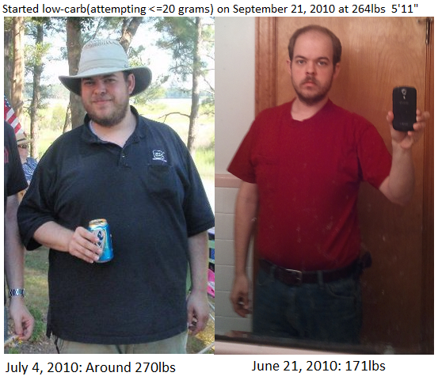

I started eating low-carb after my type II diabetic father
had great success with it, not only stabilizing his blood
sugar, but getting to a healthy weight. We work together
and eat lunch together almost everyday, so it was easier
for me than most to figure out what to eat. I've lost over
90lbs, and I'm not done yet.
-sepatown
